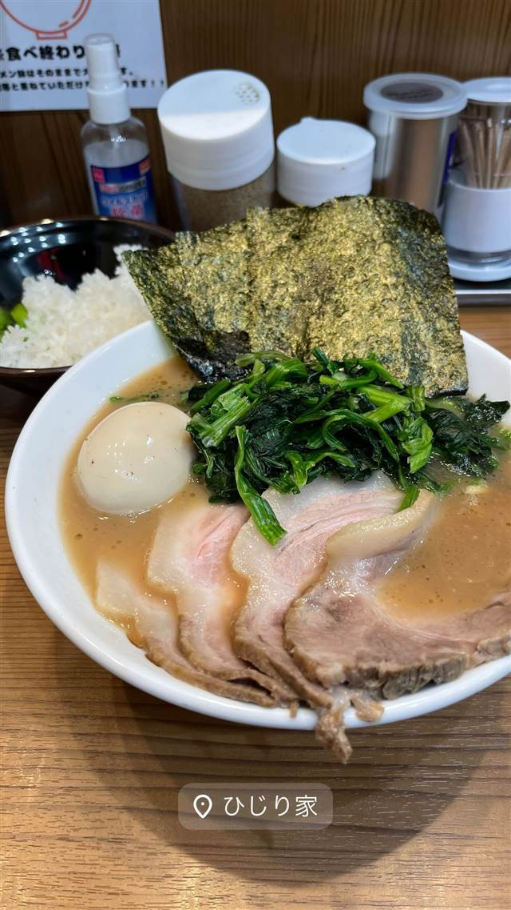
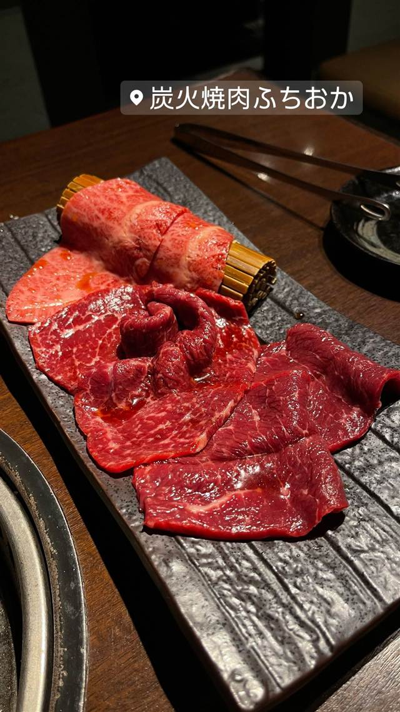

BY TOWN
経堂4店
WHY GO
わざわざ行く価値がある店2軒
-
 ★
焼肉 経堂
焼肉ホルモン 七厘いちわ 経堂店
芝浦市場60年の仲卸から仕入れる新鮮ホルモンと牛タン全部盛り
夜 ¥5,000～¥5,999
★
焼肉 経堂
焼肉ホルモン 七厘いちわ 経堂店
芝浦市場60年の仲卸から仕入れる新鮮ホルモンと牛タン全部盛り
夜 ¥5,000～¥5,999
-

家系 経堂駅 横浜家系ラーメン ひじり家 武蔵家東名川崎店で修行した店主による家系ラーメン 昼 ¥1,000～¥1,999 夜 ¥1,000～¥1,999 -

焼肉 経堂駅 炭火焼肉 ふちおか 元ITエンジニアの店主が七厘で修行し焼く黒毛和牛 夜 ¥8,000～¥9,999 -
 ステーキ 経堂駅
鉄板焼肉 大当り 本店
博多のソウルフードを継ぐ、にんにく醤油だれの鉄板焼肉定食
昼 ¥1,000～¥1,999 夜 ¥1,000～¥1,999
ステーキ 経堂駅
鉄板焼肉 大当り 本店
博多のソウルフードを継ぐ、にんにく醤油だれの鉄板焼肉定食
昼 ¥1,000～¥1,999 夜 ¥1,000～¥1,999